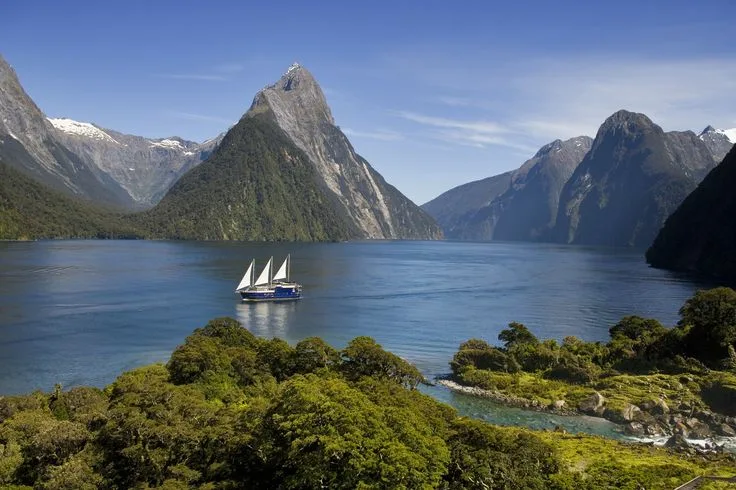

Новая Зеландия — удивительная страна, расположенная в юго-восточной части Тихого океана. Она состоит из двух основных островов — Северного и Южного, а также множества мелких островов. Каждый уголок Новой Зеландии изобилует потрясающими пейзажами, от гор до пляжей.
Места для посещения
Новая Зеландия известна своими уникальными природными достопримечательностями:
Северный остров: Эти места славятся активными вулканами, горячими источниками и красивыми пляжами.
Южный остров: Известен своими величественными горами и живописными фьельдами, такими как Милфорд Саунд.
Роторуа: Этот город известен своими геотермальными активностями и культурой маори.
Милфорд Саунд: Один из самых известных фьельдов с необычайной красотой.

Культура
Культура Новой Зеландии является уникальным смешением традиций маори и европейского влияния. Маори — коренные жители страны, которые принесли свои уникальные обычаи, язык и искусство.
Одним из самых известных элементов культуры является хака — традиционный танец, который исполняется группами в честь значимых событий.
.webp)